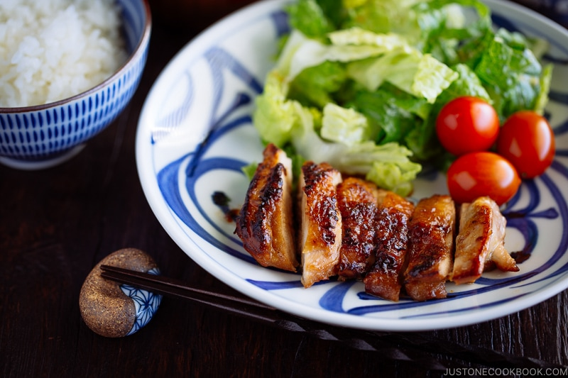

Teriyaki Chicken: delicious sweet chicken paired with rice

Description:
Learn how to make this mouth watering Chicken Teriyaki dish at home using authentic Japanese cooking methods! You’ll love the juicy chicken and crisp brown skin glazed in a flavorful homemade sauce. It’s so easy, and no bottled teriyaki sauce is needed. Your family will be impressed!
Ingredients:
- 1 knob ginger
- ¼ onion
- 1 lb boneless, skin-on chicken thighs
- kosher salt
- freshly ground black pepper
- 1 Tbsp neutral-flavored oil (vegetable, rice bran, canola, etc.)
- 2 tablespoons of sake
- 1 tsp neutral-flavored oil (vegetable, rice bran, canola, etc.)
For the teriyaki sauce:
- 1 tablespoon of sake
- 1 tablespoon of mirin
- 1 tablespoon of sugar
- 2 tablespoons of soy sauce
- 2 tablespoons of water
Steps:
- Gather all the ingredients.
- In a large bowl, combine the grated ginger and grated onion, including their juices.
- Add all the ingredients for teriyaki sauce in the bowl and mix together.
- Prick both sides of the chicken with a fork so it absorbs more flavor. If the thighs are very thick on one side, flatten them to an even thickness with a meat mallet/tenderizer.
- Cut off the excess skin and fat and lightly season the chicken pieces with salt and pepper.
- Heat a large frying pan over medium heat. When the pan is hot, add the measured oil for step 1. Remove as much of the marinade as possible from the chicken so it gets a nice sear and doesn't end up steaming in the sauce. Place the chicken skin side down, RESERVING the teriyaki marinade. Use a splatter screen if you have one (it’s a pretty neat tool to prevent oil splatters especially when you cook bacon and oily foods).
- Cook the chicken for 3 minutes. When the fat renders from the skin and the skin is golden brown, flip the chicken. Add the sake and quickly cover with a lid. Steam the chicken over medium-low heat for 8 minutes.
- Open the lid and transfer the chicken to a plate. Wipe off the excess grease from the pan.
- Put the pan back on the stove over medium heat and add the measured oil for step 4. Place the chicken back in the pan, skin side down. Brown and crisp the skin for an additional minute.
- Flip the chicken so the skin side is now facing up. Pour the reserved teriyaki marinade into the pan. Cook until the sauce is reduced by about half, frequently spooning it over the chicken. Once the alcohol from the sake and mirin evaporates, you'll see the sugar start to crystallize and the sauce thicken. Turn off the heat.
- Transfer the chicken to a cutting board and slice into bite-sized pieces.
- Serve on a plate and drizzle the remaining pan sauce on top.
- Enjoy!